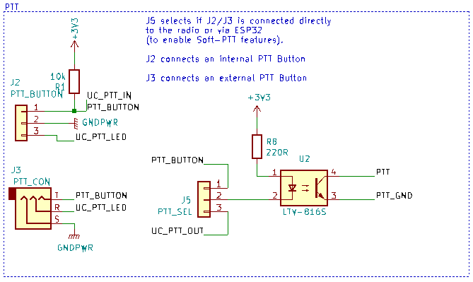
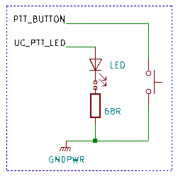
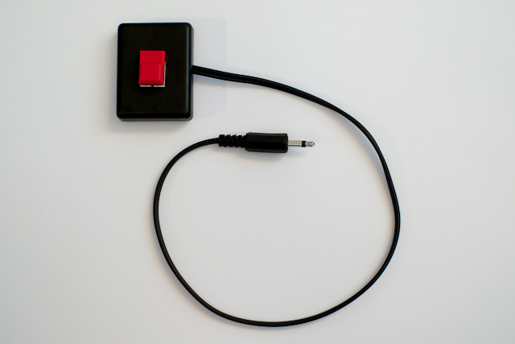

PTT-Taste¶
Allgemeines¶
Das PTT Signal kann bei bt-trx über einen drahtgebundenen Taster oder über eine Bluetooth Low-Energy (BLE) Taste gesteuert werden. Die beiden Varianten können auch gleichzeitig benutzt werden.
Soft-PTT¶
"Soft-PTT" ist kurz für "Software-PTT" und beschreibt Komfort-Funktionen, die
mit einer direkten Verbindung der PTT-Taste an den Transceiver nicht möglich
wären.
Daher wird bei Soft-PTT das PTT Signal durch den ESP32 erzeugt, der wiederum
durch eine drahtgebundene Taster oder einen Bluetooth Button angesteuert wird.
Um die Soft-PTT Funktionen nutzen zu können, muss der Jumper J5 auf der
Stellung "uC" sein.
Ist der Jumper auf der Stellung "BTN", ist das Signal des drahtgebundenen Tasters
direkt auf den Transceiver durchverbunden.
Folgende Funktionen werden durch Soft-PTT ermöglicht:
- Bluetooth PTT Taster
- PTT Toggle *)
- PTT Timeout *)
- PTT Hang Time *)
*) siehe auch Konfiguration.
Hinweis zum PTT-select Jumper J5
Der Jumper J5 muss für den Funkbetrieb in jedem Fall gesteckt sein.
Er entscheidet,
- ob der ESP32 das PTT Signal erzeugt (Stellung uC, Pins 2-3 verbunden), wird benötigt für alle oben genannten "Soft-PTT" Funktionen, oder
- ob der drahtgebundene PTT Taster direkt zum Transceiver durchgeschleift wird (Stellung BTN, Pins 1-2 verbunden), obige Features können nicht genutzt werden.
Bluetooth PTT¶
Um PTT drahtlos zu bedienen kann aktuell nur der Anytone BP-01 PTT Button
benutzt werden.
Der Jumper J5 muss dazu auf uC gesetzt sein ("Soft-PTT").
Um den Bluetooth Button mit bt-trx zu verbinden, muss der Taster nach dem Start
von bt-trx einmal gedrückt werden.
bt-trx erkennt den Taster automatisch.
Bluetooth PTT und WLAN-Modus
Während sich bt-trx im WLAN-Modus befindet, kann der Bluetooth PTT Button nicht genutzt werden. Es ist ein Neustart notwendig um die Taste wieder verbinden zu können.
Drahtgebundene PTT¶
Der PTT-Kontakt des Funkgeräts kann über mehrere Wege angesteuert werden.
Hier die PTT-Schaltung auf der bt-trx Platine:

Soll die PTT-Taste direkt in das bt-trx Gehäuse integriert werden,
bietet sich J2 an.
Soll die PTT-Taste an einer anderen Stelle als das bt-trx Gehäuse montiert
werden, wird der Anschluss an die Klinkenbuchse J3 empfohlen.
Mit einem Taster und einem Klinkenstecker kann somit einfach eine für den
jeweiligen Zweck passende PTT-Taste gebaut werden (siehe Bild weiter unten).
Der "Ring"-Kontakt der Klinkenbuchse bzw. der mittlere Kontakt von J2 ist mit
einem GPIO (3.3 V, max. 20 mA) des ESP32 verbunden, der den PTT-Status anzeigt
("UC_PTT_LED").
An diesen Kontakt kann eine LED (mit Vorwiderstand) angeschlossen werden, um
den aktuellen PTT Status wiederzuspiegeln.
Der PTT Kontakt des Funkgeräts muss über das Jumper Modul mit PTT verbunden werden. PTT_GND ist je nach Funkgerät zu verbinden.
Schaltung für PTT Taster¶

Beispiel für einen PTT Taster (hier ohne LED)¶
